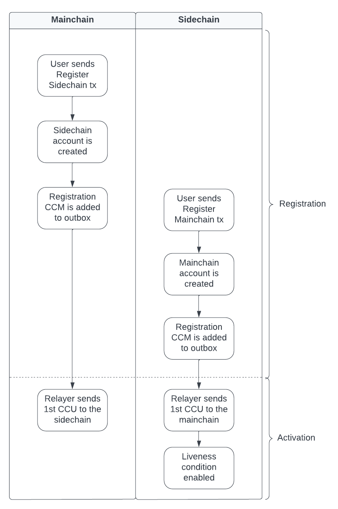

Sidechain Registration & Recovery
On this page, you learn about the sidechain registration and recovery process in the Lisk ecosystem. Specifically, you’ll learn about the following:
-
The lifecycle of a sidechain.
-
The sidechain registration process.
-
What happens when a sidechain is terminated?
-
Data recovery from a terminated sidechain.
-
What data is stored on-chain to facilitate interoperability across chains?
Life Cycle of a Sidechain
1. Sidechain registration

The first step for a Lisk blockchain to become interoperable with other sidechains and the Lisk Mainchain is to register itself to the mainchain.
A sidechain is registered by performing the following steps:
After a sidechain has been registered on the mainchain, it does not need to follow the Liveness condition, until the First Cross-chain Update has been included on the mainchain.
A sidechain can stay in the registered status for any period of time.
|
1.1. Sidechain registration on the Lisk Mainchain
A sidechain can be registered by any user account on the mainchain by posting a Register Sidechain command.
| Please check out the guide How to register a sidechain on the mainchain for a step-by-step explanation about the process. |
When a sidechain is registered on the mainchain, this creates new entries in the interoperability related data stores of the mainchain:
-
A new sidechain account in the Chain substore.
-
A new channel to the sidechain in the Channel substore.
-
The list of keys of active validators on the sidechain in the Chain validators substore.
-
An outbox root in the Outbox root substore
-
A new entry in the Registered names substore for the sidechain.
1.1.1. Register Sidechain command
The Register Sidechain command is used to register a sidechain on the Lisk mainchain. When this command is processed, a new account for the sidechain is created in the mainchain state under the interoperability store. The account is initialized with an empty inbox and outbox, while the sidechain name and the initial validators set are given in the command parameters. The chain ID, used as the store key, is also given in the command parameters.
1.2. Mainchain registration on a sidechain
Once the sidechain has been registered on the mainchain, a similar registration process should happen in the sidechain before the interoperable channel is opened between the two chains. To register the mainchain on a sidechain, any user can post a Register Mainchain command.
| Please check out the guide: How to register the mainchain on the sidechain for a step-by-step explanation of the process. |
When the mainchain is registered on a sidechain, this creates new entries in the interoperability related data stores of the sidechain.
-
A mainchain account in the Chain substore.
-
A new channel to the mainchain in the Channel substore.
-
The list of keys of active validators on the mainchain in the Chain validators substore.
-
An outbox root in the Outbox root substore
-
It also initializes the Own chain substore on the sidechain.
1.2.1. Register Mainchain command
The Register Mainchain command is used to register the Lisk mainchain on a sidechain. When this command is processed, a new account for the mainchain is created in the sidechain state under the Interoperability store. The account is initialized with an empty inbox and outbox, while the initial validators set is given in the command parameters. The name and chain ID of the mainchain are global protocol constants in the entire ecosystem.
This command also initializes another data structure in the interoperability store, containing some information about the sidechain itself. In particular, it sets the sidechain name and chain ID to the ones that have been previously registered on the mainchain via the Register Sidechain command.
1.3. Registration CCM
Every time that a sidechain is registered on the mainchain and vice versa, a corresponding "registration" CCM is created and appended to the chain outbox. The role of the registration cross-chain message is to allow for a safe activation of the channel between the sending and receiving chains. It guarantees that when the CCU activating the channel is executed, a registration transaction has been included on the partner chain as well.
When a sidechain is registered on the mainchain, an ecosystem-wide chain ID and name are assigned to this chain. The chain name, network ID, and the token used for the message fees are included in a registration message. When the first cross-chain update containing messages is sent to the sidechain, the parity of the properties in both the registration message and the interoperability store are verified.
2. Active sidechains
If the mainchain receives the First Cross-chain Update from a sidechain, the status of the sidechain changes from registered to active.
This change means, that the receiving chain is now available to receive cross-chain messages and can interact with the sending chain.
At this point, the status of the sidechain account on the mainchain is updated to active and the Liveness condition is then enforced.
The liveness condition requires active sidechains to prove their liveness once every 30 days by including a CCU in the mainchain, or the sidechain account is terminated.
| The liveness condition only needs to be fulfilled on the mainchain. That means, the mainchain account on the sidechain is not terminated, if the mainchain doesn’t send a CCU to the sidechain within 30 days. |
2.1. First Cross-chain Update
The first cross-chain update containing messages from a given chain has a special function:
It will change the sending chain status in the chain account from registered to active.
There are some things to consider when sending the first CCU:
-
It must not contain an empty certificate with no data.
-
The certificate is only valid if it allows the sidechain account to remain live for at least 15 days.
When a sidechain is started and registered, the sidechain developers might decide to not activate the sidechain straight away (maybe to perform further testing). It could occur (intentionally or not), that an old block header (almost 30 days old) is submitted to the mainchain to activate the sidechain. This could result in the sidechain being terminated for liveness failure very soon after the activation (maybe only a few minutes later).
The sidechain has therefore at least 15 days to submit the next cross-chain update to the mainchain and start the regular posting of cross-chain updates.
2.2. Live sidechains
A sidechain is considered to be live if the following applies:
-
On the mainchain: a chain is live if a chain account exists, is not terminated, and the last certificate was submitted less than 30 days ago.
-
On the sidechain: a chain is live if no "terminated state" account exists, and no chain account with the status
terminatedexists.
3. Terminated sidechains
When a sidechain is terminated, no cross-chain messages can be exchanged with it anymore.
Effectively, the sidechain is disconnected from the rest of the ecosystem, and assets (like tokens) cannot be moved to and from it anymore. In particular, this means that users can not send the assets they were holding on the sidechain back to the original native chain (the chain where the asset was created). The Sidechain recovery mechanism addresses this problem.
An active sidechain is terminated, if it fulfills any of the Termination causes described below. When a chain is terminated, a "terminated state" account is created in the Terminated state substore, storing the last certified state root of the terminated chain.
Any cross-chain messages targeting a terminated chain will be bounced back to the mainchain instead of being forwarded. When this happens, a Sidechain Terminated CCM is emitted by the mainchain, targeting the original sending chain. When this message is processed, the chain is also terminated on the sending chain, blocking future messages to the terminated sidechain.
|
The termination of a sidechain is permanent and cannot be undone. However, users can recover their tokens and CCMs from a terminated sidechain. For more details on this topic, read Sidechain recovery covered later on this page. |
3.1. Termination causes
A sidechain is terminated for the following reasons:
-
The sidechain breaks the Liveness condition.
-
The sidechain is Sending malicious CCMs.
-
The sidechain is Violating the Lisk Interoperability protocol.
3.1.1. Liveness condition
The liveness condition is defined as follows:
Active sidechains are required to prove their liveness to the mainchain at least once every 30 days. This is done by including a CCU on the mainchain.
| The liveness condition only needs to be fulfilled on the mainchain. That means, the mainchain account on the sidechain is not terminated, if the mainchain doesn’t send a CCU to the sidechain within 30 days. |
Whenever a sidechain has violated the liveness condition, any user can submit a Terminate Sidechain For Liveness command on the mainchain, and this will result in the sidechain being terminated. This rule guarantees that users do not send funds to inactive sidechains and that users who have tokens in a sidechain that stops communicating with the ecosystem can recover their tokens.
3.1.2. Sending malicious CCMs
A sidechain is terminated, if it posts a CCU containing one or multiple malicious CCMs.
Certain modules of a blockchain client have the ability to terminate a sidechain account.
If a module receives a CCM that it considers to be malicious, it can call the terminateChain method of the Interoperability module to terminate the sidechain.
For example, the Token module on the mainchain can terminate a sidechain if it violates escrow, i.e. sends more LSK tokens to the mainchain that were sent to this sidechain.
|
Notice that a sidechain terminated for this reason is not always terminated in the whole ecosystem. Imagine that a sidechain A violates escrow on a chain B (by essentially trying to mint native tokens from B), then B will terminate communicating with A. If chain B is the mainchain, then this chain is always terminated in the whole ecosystem. That means neither the mainchain nor any other sidechains can communicate with chain B anymore. However, if a sidechain A terminates another sidechain B, this has no direct effect on the connection to the other chains - the mainchain and other sidechains could still be communicating to sidechain B in this case. |
3.1.3. Violating the Lisk Interoperability protocol
It is also possible for a sidechain to be terminated, if it violates the Lisk Interoperability protocol. Note, that if a sidechain uses the Lisk Interoperability module, it never violates the protocol.
But in case another custom module is used for interoperability in a sidechain, and for example, it sends CCUs that don’t follow the expected format, this can also lead to the termination of the sidechain.
3.2. Terminate Sidechain For Liveness command
The Terminate Sidechain For Liveness command is used to terminate a sidechain that violated the liveness condition. The timestamp of the last certificate provided by the sidechain is checked against the current timestamp. If the difference is greater than the maximum allowed timespan, the sidechain is terminated.
This command can only be submitted on the mainchain.
3.3. Sidechain Terminated CCM
A "sidechain terminated" message is created by the Interoperability module when a message should be routed to a terminated or inactive chain.
The role of the sidechain terminated cross-chain message is to inform sidechains that another sidechain has been terminated on the mainchain and is unable to receive messages. The message contains the ID of the terminated chain as well as the last certified state root of the terminated sidechain (as certified on the mainchain). This value is used for the creation of the terminated state account (on the sidechain receiving the CCM), allowing state recoveries.
This message allows informing sidechains about other terminated sidechains efficiently. Hence, this message will automatically trigger the creation of the terminated sidechain account as soon as the first message is unable to be delivered. This also prevents further messages being sent to already terminated sidechains.
3.4. Channel Terminated CCM
A "channel terminated" CCM is sent to chains which have been terminated.
The role of the "channel terminated" message is to inform chains that their channel has been terminated on the mainchain. The chain receiving this message can then also close the channel to the mainchain. This is helpful in preventing users from sending transactions to a chain since the cross-chain update transaction will be invalid.
3.5. Pending CCMs
If a sidechain is terminated, it can happen that some CCMs have been sent to the sidechain before the sending chain was aware that the sidechain is terminated. Hence, this includes all the CCMs whose indices are larger than the last message index that the receiving sidechain reported to have included in its inbox on the mainchain.
Those CCMs that cannot be transmitted to the terminated chain anymore, and remain in the outbox on the mainchain are also called pending CCMs.
Pending CCMs can easily be recovered, please see CCM recovery for more information.
4. Sidechain recovery
The sidechain recovery process allows users to recover assets like tokens or NFTs from a terminated sidechain. Additionally, pending messages that were stuck unprocessed in the outbox of the terminated chain can be recovered as well, and their effect is reverted on the sending chain.
| No connection or communication to the terminated sidechain is required to complete the recovery. |
|
For the sidechain recovery process, it is not important who is sending the recovery transactions: The recovery process happens independently of the sender, and tokens and assets will always be recovered for the correct accounts. This makes it possible to provide Recovery-as-a-Service to users, to further simplify the recovery process. |
4.1. Recovery process from the mainchain
On the mainchain, users can perform the following recoveries:
The recovery process on the mainchain works as follows:
- 1.State recovery
-
In case any tokens or other assets are stored on another sidechain and this sidechain gets terminated, the assets can to be recovered from the terminated sidechain.
1.The sidechain is terminated by submitting a Terminate Sidechain For Liveness command, or violating the Token module protocol.
1a. A "terminated state" account containing the last certified state root of the sidechain is created in the state.
1b. A user can start recovering assets with a Recover State command.
The funds are then credited to the user’s account on the mainchain. Finally, the state root of the terminated sidechain is then updated accordingly.
- 2.CCM recovery
-
It is possible to recover any Pending CCMs that may have been unprocessed in the outbox of the terminated chain. Subsequently, their effect can be reverted on the sending chain.
However, it is important to note that users are not guaranteed to recover their CCMs in every situation. Certain state information of the terminated sidechain might have been modified before the termination occurred, and this would make the recovered CCM application fail. For example, in the case whereby escrowed LSK tokens exist in the sidechain account on the mainchain, which could have been subtracted by prior malicious behavior in the terminated sidechain.
2.The Initialize Message Recovery command is then sent. This command contains the inbox size of the mainchain stored on the terminated sidechain, which indicates how many cross-chain messages were processed.
2a. A "terminated outbox" account is created in the Terminated outbox substore. This contains the outbox root of the terminated sidechain channel, and the inbox size provided with the Initialize Message Recovery command.
2b. A user can now recover pending messages with a Recover Message command.
4.2. Recovery process from a sidechain
On a sidechain, users can perform the following recoveries:
-
State recovery: In case any tokens or other assets are stored on another sidechain and this sidechain gets terminated, the assets can be recovered from the terminated sidechain.
|
Recoverable modules
State changes can only be recovered on a sidechain, if the module targeted by the CCM supports the recovery.
Recoverable modules expose a For custom modules, it is therefore recommended to always implement a |
On a sidechain, the process flow can occur in the following 3 scenarios described below:
4.2.1. Scenario 1: Violation of a module protocol
If a sidechain is Sending malicious CCMs which are breaking the protocol of the corresponding module on the receiving chain, the chain will recognize this during the validation of the CCM. The receiving chain will then terminate the account of the sending chain.
The recovery process for scenario 1 works as follows:
-
A "terminated state" account containing the mainchain’s last certified state root is created in the sidechain state.
-
An Initialize State Recovery command is sent. This command contains the last certified state root (on the mainchain), of the terminated sidechain and an inclusion proof against the mainchain state root stored in the "terminated state" account.
-
A user is able to recover assets native to the sidechain with a Recover State command.
4.2.2. Scenario 2: Receiving a "sidechain terminated" CCM
Sometimes it can happen that a sidechain is terminated on the mainchain, and yet it is still active on other sidechains. That is because the mainchain does not inform other sidechains immediately about a termination. If a sidechain then tries to send a CCU to a sidechain that is already terminated on the mainchain, the CCU will be rejected by the mainchain, and it will respond with a Sidechain Terminated CCM.
A sidechain receives a Sidechain Terminated CCM from the mainchain, indicating that a cross-chain message could not be delivered because the receiving chain was terminated. This CCM contains the last certified state root (on the mainchain), of the terminated sidechain. The receiving chain will then terminate the account of the corresponding sidechain.
The recovery process for scenario 2 works as follows:
-
A "terminated state" account containing the sidechains last certified state root is created in the state. However, it is important to note that in this case, the terminated sidechain state root is set immediately, and there is no need for an Initialize State Recovery command.
-
A user can recover assets native to the sidechain with a Recover State command.
4.2.3. Scenario 3: Termination on the mainchain
In case it is already known that a sidechain is terminated by the users, they can avoid scenario 2, where a CCU is rejected, and directly initialize the state recovery.
The recovery process for scenario 3 works as follows:
-
An Initialize State Recovery command is sent. This command contains the last certified state root (on the mainchain), of the terminated sidechain and an inclusion proof against the last certified mainchain state root, proving the termination.
-
A "terminated state" account containing the sidechains last certified state root is created in the state.
-
A user can recover assets that are native to the sidechain with a Recover State command.
4.3. Recovery-as-a-Service
To perform a recovery of assets from a terminated sidechain, specific information is required to prepare a recovery transaction, see Recovery commands. Furthermore, this information has to be kept updated every time a recovery command is processed.
Third-party services could offer to recover assets and messages on behalf of users. Recovery services would run a mainchain and sidechain node to provide the data availability, possibly in exchange for a small fee.
4.4. Recovery commands
4.4.1. Initialize State Recovery
The Initialize State Recovery command sets the sidechain state root in the "terminated state" account, so that state recovery commands can be issued.
A sidechain account can be terminated on a sidechain using the terminateChain function exposed by the Interoperability module.
In this case, the state root is generally not available and the terminated state account is created without setting the sidechain state root.
Instead, the account stores the mainchain state root at the time of termination.
A state recovery initialization command can be posted afterwards to set the sidechain state root by giving an inclusion proof against this mainchain state root.
It contains an inclusion proof against the mainchain state root stored in the terminated state account, proving the value of the state root of the terminated sidechain.
Any user on the corresponding sidechain can send a transaction with this command and initiate the state recoveries with respect to the terminated sidechain.
Further information including the createTerminatedStateAccount function can be found in LIP 0045.
| The Initialize State Recovery command can only be submitted on a sidechain. |
This command has two purposes. It can be used to perform the following:
-
…set the state root of a "terminated state" account on a sidechain, or
-
…to terminate another sidechain directly.
4.4.2. Recover State
The Recover State command is used to recover assets (for example, fungible and non-fungible tokens) from a terminated sidechain.
This command contains an inclusion proof, proving the user balance on the sidechain against the state root stored in the terminated state account.
The recovery of the state is then handled by the relevant module (for example, the token module would refund the user), and the state root is updated.
The following information is required to recover assets from a terminated chain:
-
Access to the specific asset to recover from the sidechain.
-
The entire state tree authenticated by the last certified state root to be able to provide the inclusion proof.
4.4.3. Initialize Message Recovery
Once a terminated state account has been created on the mainchain, users can send this command to initialize the corresponding terminated outbox account in the Terminated outbox substore. This command contains the channel account of the mainchain stored in the state of the terminated sidechain, and an inclusion proof for it against the state root stored in the corresponding terminated state account.
The following information is required to initialize message recovery on the mainchain:
-
chainID: The ID of the sidechain whose terminated outbox account is to be initialized. -
channel: The channel of this chain stored on the terminated sidechain. -
bitmap: The bitmap of the inclusion proof of the channel in the sidechain state tree. -
siblingHashes: The sibling hashes of the inclusion proof of the channel in the sidechain state tree.
4.4.4. Recover Message
The Recover Message command is used to recover any Pending CCMs from the outbox of a terminated sidechain.
The user proves with an inclusion proof validated against the outbox root stored in the terminated outbox account that the message is in the terminated sidechain outbox. The message nonce is compared to the size of the inbox (also stored in the terminated outbox account), to check that the message had not been processed yet.
The Recover CCM is then bounced back to the original sending chain or processed directly if the sending chain is the mainchain. When the recovery process is completed, a corresponding Recover event is emitted.
The following information is required to recover pending CCMs:
-
Access to the cross-chain messages in the sidechain outbox.
-
The entire tree of the sidechain outbox to be able to provide the inclusion proof.
4.5. Recover CCM
The Recover CCM is sent from the mainchain to the sending chain to facilitate the CCM recovery on a sidechain.
The module responsible for recovering the dedicated assets (e.g. the Token module) will then emit a Recover event to inform the network about the performed recovery.
4.6. Recover event
The Recover event is emitted by when a CCM recovery is performed.
Interoperability data substores
Each sidechain stores data related to cross-chain interoperability in the Interoperability data store, maintained by the Interoperability module.
The interoperability store consists of several substores, as shown in the diagram below.
Each box in the above diagram represents a substore, where the storeKey -→ storeValue relation is indicated.
Each substore and the data in it are described in detail below.
Outbox root substore
The "outbox root" substore holds the root of the Merkle tree containing the messages targeting the respective partner chain for every registered sidechain.
It is initialized on the respective chain as part of the Sidechain registration process.
|
The outbox root property is duplicated and additionally stored separately from all other properties of the chain account. Storing the outbox root with a different substore prefix allows to separate the subtree corresponding to the outbox roots from the rest of the data in the interoperability store. This choice allows for shorter inclusion proofs for the outbox root, as the other properties of the Interoperability module are not required to recalculate the state root if the outbox root is known. In particular, the inclusion proof contained in a CCU from a sidechain posted on the mainchain will contain only one hash. |
Details
- Key
-
Each store key is set to the ID of the partner chain
chainID. - Value
-
Each entry in the "outbox root" substore includes the following property:
-
root: The root of the underlying Merkle tree of the partner chain outbox.
-
Own chain substore
The "own chain" substore stores the name and ID of the respective chain.
On the mainchain in the Lisk Mainnet, the own chain account is present by default and set to an object with the following properties:
{
name: "lisk_mainchain",
chainID: 00000000,
nonce: 0
}On a sidechain, the own chain account is initialized as part of the Mainchain registration on a sidechain.
Details
- Key
-
The store key is set to an empty string
"". - Value
-
The "own chain" substore consists of the following properties:
-
name: The name of the sidechain registered on the mainchain with the Register Sidechain command. -
chainID: The chain ID assigned to the sidechain on the mainchain after processing the sidechain registration command. -
nonce: The chain nonce, an incremental integer indicating the total number of CCMs sent from the chain.
-
Chain substore
The chain substore holds the chain accounts of other partner chains.
It is initialized on the respective chain as part of the Sidechain registration process.
-
On the mainchain, the store contains accounts of all registered sidechains.
-
On a sidechain, the store contains a mainchain account.
Details
- Key
-
Each store key is set to the ID of the partner chain’s
chainID. - Value
-
Each entry in the chain account substore includes the following properties:
-
name: This property corresponds to the name of the sidechain as a string of characters. It has to be unique in the ecosystem and contain only characters from the set[a-z0-9!@$&_.]. For the mainchain account on a sidechain, this property is initialized to the string"lisk_mainchain". For a sidechain account on the mainchain, this property is set by the sender of the Register Sidechain command. -
lastCertificate: This property holds some information from the certificate posted contained in the last CCU from the partner chain. It is an object containing the following properties:-
height: The height contained in the last certificate from the partner chain. It is used to validate a certificate[1] (certificates must contain block headers with increasing heights). -
timestamp: The timestamp contained in the last certificate from the partner chain. On the mainchain, it is used to check that the sidechain chain fulfills the Liveness condition. -
stateRoot: The state root contained in the last certificate from the partner chain. It is used to validate the inclusion proof of the cross-chain messages contained in a CCU and to verify the validity of the module recovery command. -
validatorsHash: The validators hash present in the last certificate from the partner chain. This value always corresponds to the hash calculated from the Chain validators substore entry for the partner chain.
-
-
status: This property stores the current status of the partner chain account. As explained in Life Cycle of a Sidechain, there are 3 possible statuses:registered(0),active(1), andterminated(2). The default value of this property is0, corresponding to theregisteredstatus.
-
Channel substore
The channel substore holds information about the inbox and outbox with other partner chains.
It is initialized on the respective chain as part of the Sidechain registration process.
-
On the mainchain, the store contains channels to all registered sidechains.
-
On a sidechain, the store contains a channel to the mainchain.
Details
- Key
-
Each store key is set to the ID of the partner chain
chainID. - Value
-
Each entry in the channel substore includes the following properties:
-
inbox: The data structure containing information about the cross-chain messages received from the partner chain, organized in a Regular Merkle Tree[2]. It contains the following properties:-
root: The root of the Merkle tree. -
appendPath: An array of hashes necessary to append new data to the tree efficiently. -
size: The current size of the tree, i.e. the number of cross-chain messages received from the partner chain that have been processed.
-
-
outbox: The data structure containing information about the cross-chain messages sent to the partner chain, organized in a Regular Merkle Tree. It contains the following properties:-
root: The root of the Merkle tree. -
appendPath: An array of hashes necessary to append new data to the tree efficiently. -
size: The current size of the tree, i.e., the number of cross-chain messages sent to the partner chain.
-
-
partnerChainOutboxRoot: The value of this property is set to the outbox root computed from the last CCU from the partner chain. It is used to validate the cross-chain messages contained in a future CCU when the CCU does not certify a new outbox root. -
messageFeeTokenID: This property is the token ID of the token used to pay for the cross-chain message fees. -
minReturnFeePerByte: This property is the minimum fee per byte to automatically send back a CCM from the partner chain in case of execution errors. In particular, the CCM fee must be larger or equal to the product of its size in bytes andminReturnFeePerByte. The value used in channels between mainchain and sidechains isminReturnFeePerByte=1000Beddows.
-
Chain validators substore
The "chain validators" substore holds information about the validators of other partner chains.
It is initialized on the respective chain as part of the Sidechain registration process.
-
On the mainchain, the store contains lists of validators for all registered sidechains.
-
On a sidechain, the store contains the list of the mainchain validators.
Details
- Key
-
Each store key is set to the ID of the partner chain
chainID. - Value
-
Each entry in the "chain validators" substore includes the following properties:
-
activeValidators: An array of objects corresponding to the set of validators eligible to sign the certificates from the partner chain. Each entry contains the following properties:-
blsKey: The BLS public key used to sign certificates. -
bftWeight: An integer indicating the weight of the corresponding BLS public key for signing a certificate.
-
-
certificateThreshold: An integer setting the required cumulative weight needed for the certificate signature to be valid. For the mainchain account on a sidechain, theactiveValidatorsandcertificateThresholdproperties are initialized by the Register Mainchain command. For a sidechain account on the mainchain, they are set by the Register Sidechain command.
-
Terminated state substore
A terminated state account is created for a terminated chain on the mainchain or another sidechain …
-
… as part of the
terminateChainfunction, -
… as part of the processing of a Sidechain Terminated CCM,
-
… as part of the processing of a Channel Terminated CCM,
-
… or as part of the processing of a Recover State command.
It is initialized with the information contained in the last sidechain certificate posted on the mainchain.
Details
- Key
-
The store key is set to the ID of the terminated chain
chainID. - Value
-
Each entry in the "terminated state" substore includes the following properties:
-
stateRoot: The state root of the terminated chain. -
mainchainStateRoot: The state root of the mainchain at the moment in which the chain was terminated. -
initialized: A boolean value, indicating whether the terminated state account has been initialized, i.e., if thestateRootproperty has been set.
-
Terminated outbox substore
A "terminated outbox" account is created for a terminated chain on the mainchain as part of the processing of a Recover Message command.
A data structure holding the outbox root along with the mainchain inbox size from the terminated sidechain, indicating the number of messages that were processed on it.
Details
- Key
-
The store key is set to the ID of the terminated chain
chainID. - Value
-
Each entry in the "terminated outbox" substore includes the following properties:
-
outboxRoot: The outbox root of the terminated chain. -
outboxSize: The outbox size of the terminated chain. -
partnerChainInboxSize: The number of cross-chain messages processed in the terminated chain, set to thepartnerChainInboxSizeproperty contained in the Recover Message command.
-
Registered names substore
In order to process sidechain registration commands more efficiently, it is convenient to store the names already registered in the ecosystem on the mainchain. This way it is possible to quickly check the uniqueness of the sidechain name.
This substore contains the names of all chains in the ecosystem.
| The "registered names" substore is only present on the mainchain. |
An entry for the Lisk Mainchain is present by default. Any new entry for a sidechain is created as part of the Sidechain registration on the Lisk Mainchain in the "registered names" substore.
Details
- Key
-
The chain name (String).
- Value
-
Each entry in the "registered names" substore includes the following properties:
-
chainID: The ID of the chain.
-